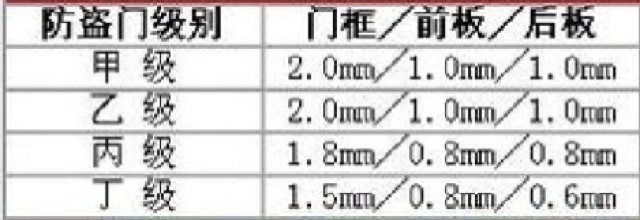
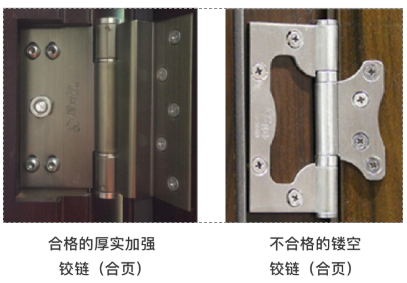

防盗门结构
防盗门级别有哪些？
FAM-J就是甲级防盗门，甲乙丙丁分别对应J\Y\B\D，甲级最好，依次变差。
门扇内侧钢印，公安部要求必须有
不同等级防盗门有何区别？

合页（铰链）细节注意哪些？

填充物优劣（从猫眼看）
填充物一般不影响厂家的安全等级（甲乙丙丁）测试与评定，高低档填充物会造成一扇门高达400元左右的成本差异，所以是简配的重点区域。填充物的主要作用在于保温、隔热、隔音、防火，所以业主应特别留意，不要只关注外观，可以打开猫眼或锁孔处查验，有不少甲级门填充物为最差的蜂窝纸。
还有不良商家为了增加门的厚重感填充混凝土等材料，所以请业主务必留意填充物，在正常填充的情况下，门厚重且启闭平顺应是好门
如何挑选锁具？
再好的门也要有好的锁才能发挥作用，锁好不在于锁点多少。
公安部的测试对门锁的安全级别要求不太高（其主要针对暴力破坏，对技术型开锁考虑不多），但不管锁点再多，一旦锁芯打开，所有锁点均解锁，所以不管什么级别的防盗门均建议选用B级或C级锁 AB锁（就是装修后不换锁芯只换钥匙的锁具）的存在安全隐患，有心人可以利用装修期间的钥匙相对快速的打开锁。
防盗门与防火门区别？
防火门一般不具备防盗功能，防火门主要针对火烧在规定时间内部破坏；
防盗门主要防范一定时间内不被暴力破坏的门；
作用不同，不是花大价钱买防火门就好，还请业主根据自己的需求购买合适的门，即防火又防盗的门比较少，需同时具备两个检验报告，开头为FAM及GFM。
防盗门如何选购？
市场相对透明，多对比锁具、填充物、五金这些细节，正规厂家钢板都是符合国标要求的。
防盗门主要品牌？
步阳 万嘉 盼盼 美心 王力 群升 星月神 春天